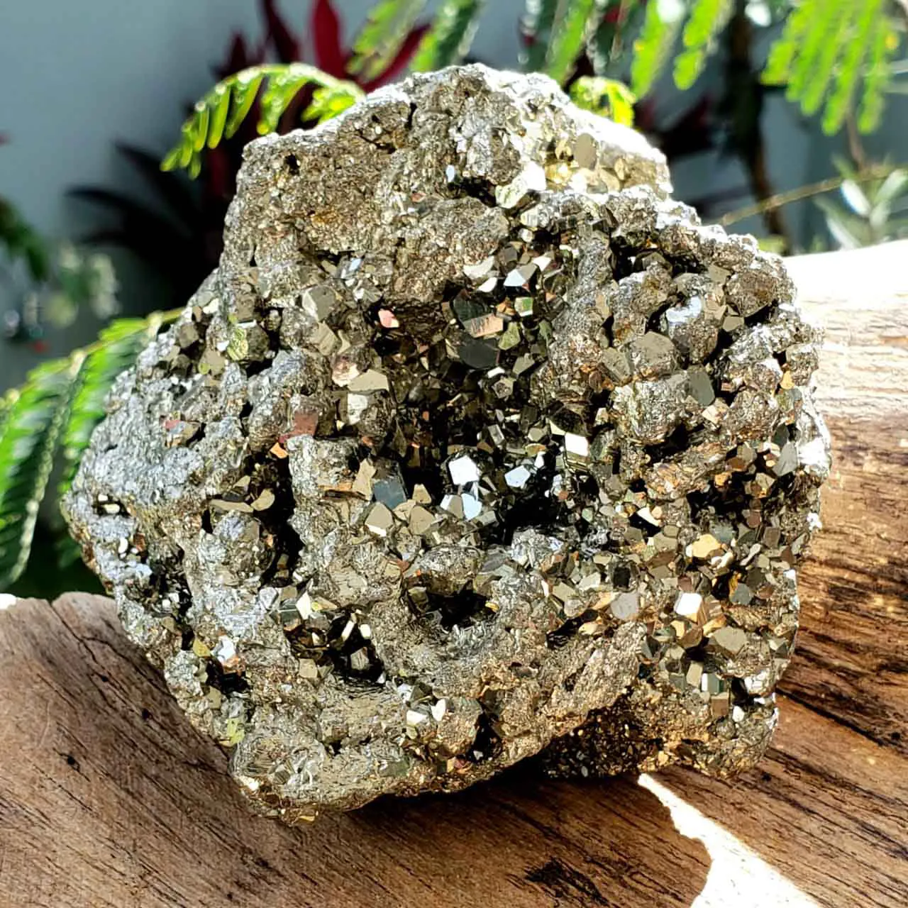

GAIA
GAIAPirita
A Pirita é um escudo energético excelente. Pedra da autoestima que traz o brilho interior, fazendo o nosso melhor vibrar. Traz a clareza mental, ordenação e estabilidade dos pensamentos. Atua beneficamente na mente proporcionando novas ideias e criatividade, quebrando crenças limitantes. Ela atua como um ímã para atrair coisas boas. Além disso, também representa a capacidade de gerar riquezas por seu próprio poder.
